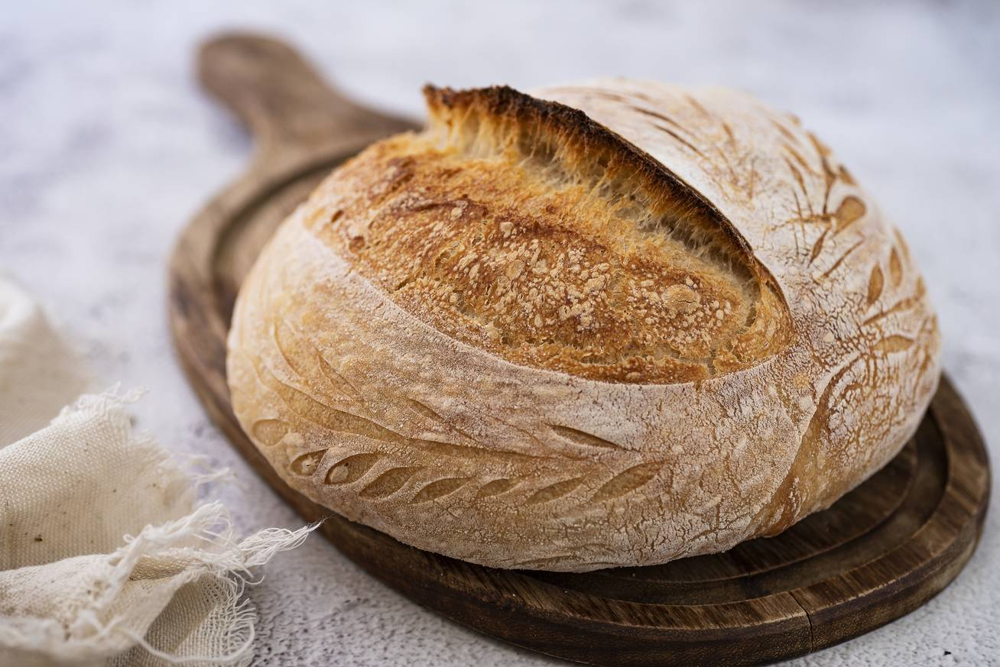

Az emberiség első kenyere
Képzeld el az ősidőket, amikor az ember még vadászó-gyűjtögető életmódot folytatott. A természet ajándékait kutatva rájöttek, hogy bizonyos magvak nem csak nyersen fogyaszthatók, hanem megőrölve és vízzel keverve egészen új étel készülhet belőlük. Így született meg az első kenyér, egy egyszerű, lapos lepény, melyet forró köveken vagy parázs felett sütöttek meg. Ez az innováció nem csak tápláló volt, hanem könnyen szállítható és hosszan eltartható, ami forradalmasította az ősi közösségek életét.
A gabonatermesztés úttörői

Amikor az emberek elkezdtek letelepedni és földműveléssel foglalkozni, a gabonatermesztés alapjaiban változtatta meg mindennapjaikat. A búza és az árpa nem csak folyamatos táplálékforrást jelentett, hanem lehetővé tette a felesleg felhalmozását is. A gabonatárolók és silók megjelenése elősegítette a közösségek növekedését és a civilizációk kialakulását. A kenyér ebben az időben nem csupán étel volt, hanem a bőség és a jólét szimbóluma is.

Az ókori civilizációk kenyere
Az ókori Egyiptom lenyűgöző példa arra, hogyan vált a kenyér a kultúra szerves részévé. Az egyiptomiak mesterei voltak a kenyérsütésnek, több mint 30 féle kenyeret és péksüteményt készítettek. A kovász felfedezésével a tésztájuk könnyed és levegős lett, ami új gasztronómiai élményt nyújtott. A kenyér annyira fontos volt számukra, hogy gyakran sírhelyeikbe is helyeztek belőle, hogy a túlvilágon se szenvedjenek hiányt.
A kovász varázsa
A kovász varázsa valódi forradalmat hozott a sütés művészetében. Az erjedési folyamat során a természetes élesztők megemelték a tésztát, gazdagabb ízt és jobb textúrát eredményezve. Ez nem csak az ízélményt fokozta, hanem a kenyér eltarthatóságát is növelte. A kovászos kenyér hagyománya generációról generációra öröklődött, és a mai napig értékes része gasztronómiai örökségünknek. A kovász készítése gondos figyelmet és türelmet igényel, hiszen a megfelelő hőmérséklet és időjárási körülmények kulcsfontosságúak az erjedési folyamat sikeréhez. Ez a művészet magában foglalja a természetes élesztők és baktériumok harmonikus együttműködését, ami egyedi és összetett ízeket eredményez.
Kenyér a középkorban
A középkorban a kenyér az európai társadalom alapvető élelmiszerévé vált. Minden társadalmi réteg fogyasztotta, bár a minőség és az összetevők változtak. A szegények gyakran sötétebb, rozsos kenyeret ettek, míg a gazdagok fehér, finomlisztből készült kenyérrel táplálkoztak. A pékségek és a malmok a városi élet központjává váltak, és a kenyér a gazdasági és társadalmi élet fontos tényezője lett.
Az ipari forradalom kenyerei

Az ipari forradalom a kenyérgyártást is alapjaiban változtatta meg. A gőzgépek és a modern malmok
bevezetésével a liszt őrlése hatékonyabbá vált.
A tömeggyártás elterjedése lehetővé tette, hogy a kenyér
olcsóbb és elérhetőbb legyen, de ezzel egyidejűleg sok helyen csökkent a minőség. A hagyományos kézműves
technikák háttérbe szorultak, felvetve a kérdést: vajon megéri-e a mennyiség oltárán feláldozni a
minőséget?
A modern kenyérkészítés
A 20. század végén és a 21. század elején az emberek újra felfedezték a kézműves kenyerek értékét. A mesterszakácsok és pékmesterek visszatértek a hagyományos kovászhoz és a természetes alapanyagokhoz. A "slow food" mozgalom részeként a kenyérkészítés újra művészetté vált, amely tiszteletben tartja az időt és a tradíciókat. Ez a folyamat nem csak az ízek gazdagodását hozta magával, hanem közösségeket is épített.
A kenyér kulturális jelentősége

A kenyér mindig is a közösség és a kultúra tükreként szolgált. Gondoljunk csak a mediterrán pita kenyérre, amely az ételek megosztásának szimbóluma, vagy a japán gőzölt zsemle finomságára. Minden kultúrának megvan a maga egyedi kenyérfajtája, amely történeteket mesél a múltjáról, szokásairól és értékeiről. A kenyér ünnepeken, rituálékon és mindennapi étkezéseken is központi szerepet tölt be.
Az újítások kora a kenyérgyártásban
A jelenkor kihívásai és az egészségtudatosság növekedése új irányokat nyitott a kenyérkészítésben. Az alternatív gabonák, mint a tönköly, a quinoa vagy az amaránt, egyre népszerűbbek. A gluténmentes, vegán és bio kenyerek megjelenése válasz a fogyasztók változó igényeire. A fenntarthatóság és a környezettudatosság is előtérbe került, ösztönözve a helyi termelést és a szezonális alapanyagok használatát.
A kenyér jövője

A kenyér története végtelen, akárcsak az emberi kreativitás. Minden szelet egy lehetőség az újragondolásra és az innovációra. A technológia fejlődésével elképzelhető, hogy hamarosan 3D nyomtatott kenyeret vagy személyre szabott tápanyagtartalmú péksüteményeket fogyaszthatunk. Bárhogy is alakuljon, a kenyér továbbra is összeköt minket, emlékeztetve közös múltunkra és inspirálva a jövő generációit.